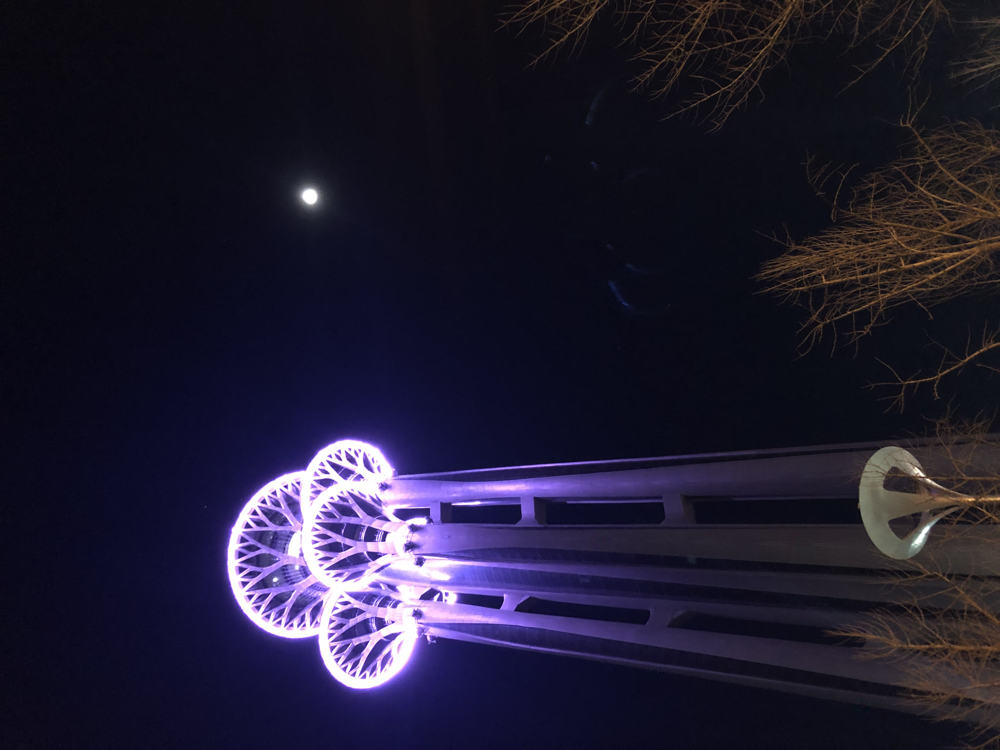
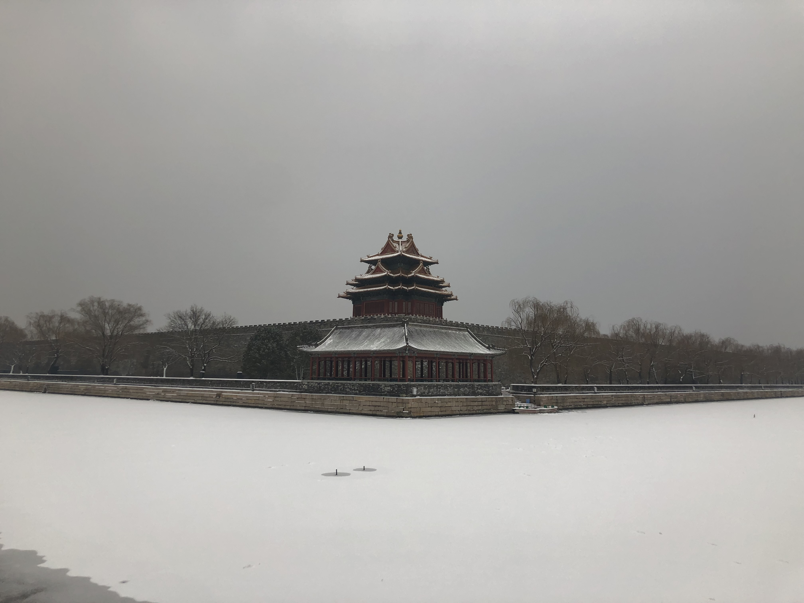

今年1月真的是全新的开始。不得不说，如果你心情烦闷了，不如一个人去野外走走。如果你感到孤独了，不如叫个朋友陪你旅行。
这不1月1日新年初始，我就去了凤凰岭。毕竟新年爬山，步步高升嘛！
之后8号，我在咸鱼认识了一位朋友。本以为交易完毕，再无交集，却发生了一些小“意外”，感觉这份友谊会因为这次“意外”走的更加长远。
刚开始见到他的时候，感觉挺帅气的，还是红发，还想着不会是“社会少年”吧？哈哈哈，尴尬
毕竟，让我白等了一个半小时，还以为是寻我开心。
（ps：他的手机铃声好像是《三天三夜》，还打不通，当时坐在汉堡王的我简直精神肉体双重折磨。）
他看起来比较毛躁，这点仅是对他自己而言。从刚开始认识他，把电脑放在不平的桌子上，挪动的时候还不小心碰了一下。到和他一起去看北京中轴线，当我们走在狭长的过道时，我提醒过他书包会剐蹭到墙壁，不过他好像并不以为然。感觉他有在意，又有点在旁人面前不好在意，又有那么点不在意的样子。
不过这样一个毛毛躁躁的人，对待他人却挺心细的。从退货的理由和礼物，到我拍照时会刻意走在我后面，再到吃辣子鸡时给我特意倒水而非倒酒，可以看出对待他人是一个很细心的家伙，会观察对方的言行。
（pps：不过喝酒这一点我要吐槽，就不能不那么在意谁的杯子比谁低嘛？让我有种拘束感，我又不是长辈。）
在那次交易完毕之后，我就和朋友去了朝阳公园滑冰。这我不得不夸赞下我自己的运动天赋（这文章应该没人看吧），我本来以为会摔倒无数次，结果下地就会滑了，而且滑的挺有样子，这里我要感谢下小时候滑旱冰摔跤而没放弃的自己。
之后的16号，我和他去了中轴线。因为15号突发奇想想看看即将开冬奥的鸟巢，所以大晚上去了奥体中心。正如他所说奥林匹克塔远远望去神圣而又给人安宁。那天晚上它散发着幽暗的紫光，与周围的建筑格格不入，看上去更像是外星文明。如果说周围的建筑是这个时代的产物，那么奥林匹克塔就是我想象中《三体》的巨树。

我发现我现在有点神经病，因为做决定总是突然之间的，并未经过大脑，或仅是短暂停留。
其实，我还在担心我这么直接邀请他去中轴线，会不会人家不好意思拒绝而耽误了他的冬奥志愿者。那我不就成了“千古罪人”，还好疫情并不严重，而我也像章北海一样内心怀有坚定的信念。
走在南长街，当夕阳洒在地上，望着飞鸟，看着河面，感受微风抚摸你的脸颊。将身体的每一个部分都交给它，将自己化作这古城的一部分，感受岁月的流逝，感受千古的历史。那一刻好像时间静止，而你已是永恒。
最开始把他当成学生，觉得凡事都多该为他想想，毕竟是祖国的未来嘛。现在看来，我真是个神经病，正常朋友对待就好了。在这次旅程中，我渐渐忘了他学生的身份，把他当成了朋友，同事或是同学，毕竟也没比我小多少。
那天的月亮又圆又亮，灯火阑珊间，看着男男女女们走在石桥上，好像是一对对相会的爱人。
那晚我们走在烟袋斜街，望着城墙，望着月亮，平静如水的是心。
20号北京下雪了而且连续下了3天，真是上天眷顾。这不马不停蹄的去了故宫，这雪景我是可不能错过的。

景是好景，但人实在是太多了，那样就少了独特的孤独感。
于是……我又来到了香山。山里的雪景一定也是很好看的吧！
（一天都没吃饭了，还能再爬个香山…我终于找的我长不胖的原因了。）
不过正如我所说，美景难寻。
在我们的聊天中，我得知他是一名重度抑郁患者。当时我想到了在我为数不多的朋友中，也有一位轻度抑郁患者。他们好像饱受失眠，焦虑，学业等各种社会压力的影响。
但我并不能看的出来，觉得他们和别人也没有什么不同。除了因失眠带来的困扰能让我感同身受，我并不懂得如何帮助他们，或许这和他们的原生家庭有关，还是不区别对待他们就好啦。
总之能在新年初始，便能遇到一位闪闪发光的朋友，真的是无比幸运。
那么祝大家晚安啦，好梦~~~